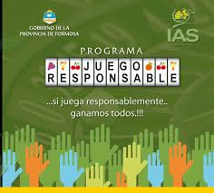

Funciones del IAS
El IAS es el organismo oficial de control de los juegos de azar en la provincia de Formos, cumpliendo funciones esenciales para garantizar un sistema trasnparente y responsable.
-
Regulación de salas de juegos de azar
Supervisa y regula todos los juegos de azar autorizados en la provincia de Formosa.
-
Fiscalización de salas de juego
Controla el funcionamiento de agencias, salas de juego y casinos habilitados.
-
Otorgamiento de licencias
Gestiona las habilitaciones y licencias necesarias para ooperar juegos de azar.
-
Programas de juego responsable
Desarrolla e implementa programas para prevenir la ludopatía y promover el juego responsable
-
Destino de fondos sociales
Canaliza los fondos recaudados hacia programas sociales y comunitarios de la provincia.
Compromiso con la Responsabilidad Social
- Prevención de ludopatía
- Promoción del juego responsable
- Protección de menores
- Apoyo a programas comunitarios
- Trasparencia en le gestión
